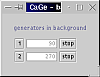

Background Tasks
CaGe runs two kinds of tasks "in the background", both are tasks that can take a long time and require no user interaction (other than possibly to cancel them). These tasks are a) generation processes that use file output rather than viewers, and b) the conversion of 3D embeddings to folding nets. CaGe shows both of these in an extra "background tasks" window next to the windows CaGe uses for "foreground activities" (defining a new production process and controlling viewer output processes).
Some technical information for interested readers (skip this if you are not): Background tasks run within the same Java Virtual Machine as CaGe itself. Java uses threads for concurrent tasks, but these don't actually offer true multitasking; you may notice that the handling of background tasks is temporarily suspended while you engage in foreground activity. However, both kinds of background tasks involve separate processes (for the generators as well as the folding net converter) in which the main work is done, so CaGe can benefit from the operating system's multitasking capabilities. All that CaGe does is read those processes' output, a simple job for which there will often be sufficient time in between your foreground actions.
The background tasks window appears as soon as a background task starts,
and it can not be closed as long as some background task is active. This
screenshot shows the background tasks window displaying two file output
tasks. Each of these has a number (one and two in this example) identifying
it during the CaGe session. A finished background task may disappear from
the background tasks window, but its number won't be reused within the
same CaGe session. There is another field for each file output task which
shows the task's progress, in terms of the number of graphs that have
been generated and embedded.

Two interactions are possible with a file output task in the background
tasks window. The "stop" button cancels the task. If you want
to restart a stopped task, you must reschedule it using CaGe's options
windows. And the task number is a button as well: if you click it, a dialogue
will appear with some information about the background task. This screenshot
shows such an information dialogue.
Folding net tasks are also displayed in the background tasks window, in
the way shown in the third screenshot. Remember
that CaGe puts all folding net tasks into a queue. In this example, 8
tasks have already passed through the queue, one of these has failed.
Two further tasks are still in the queue. You can click the "abort
curr(ent)" button if you feel that the first task in the queue is
taking too long. The folding net generator can in fact fail after trying
a number of ways of "cutting open" a 3D-embedded graph, and
you might suspect that this is about to happen with the current folding
net task. Tasks that have failed in any way, including those interrupted
with the "abort" button, are counted in the "failed"
category.
If you try to exit CaGe while a background task of any kind is still active,
CaGe will warn you about this and ask what to do with the remaining tasks.
The background tasks window will be displayed, along with a message and
two extra buttons. The screenshot on the right shows an attempt to exit
CaGe at a time when two generation processes with file output have in
fact ended (one of them through the "stop" button), but the
folding net queue is still active. You can now decide to exit anyway,
killing all background tasks, by clicking the "Exit" button.
You can also cancel your attempt to exit -- i.e. return to CaGe and continue
working -- through the "Cancel" button. If you don't have any
further work to do in the CaGe but want to wait for the background tasks
to finish, just leave this window alone. As soon as the last background
task has finished, CaGe will exit. If you have used any "stop"
or "abort" buttons in the background window since the exit warning
has appeared, the exit will not be automatic, instead you will have to
click once more to decide whether to exit or cancel the exit (return to
CaGe).
| Viewing
results |
||
| Rasmol,
another 3D viewer |
||